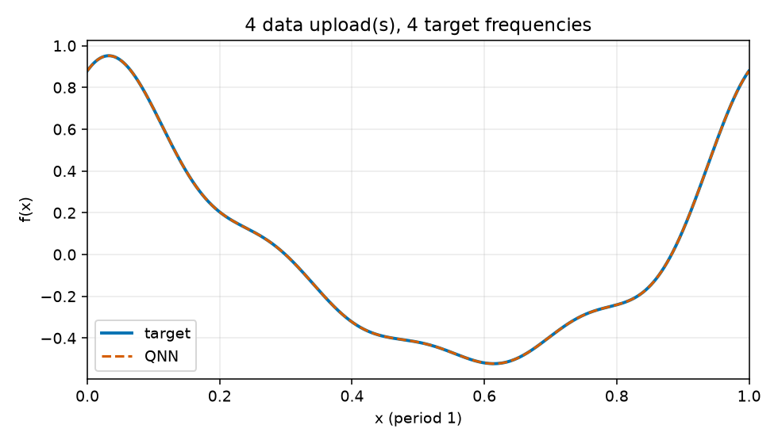
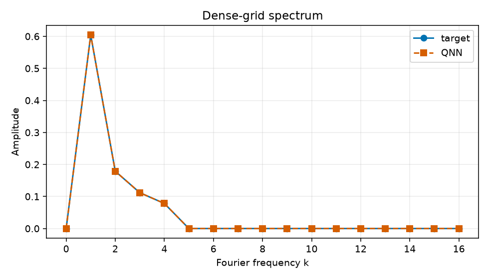

Uploads: 4; target frequencies: 4; train/validation/test: 64/128/512; objective: empirical training MSE only.
{
"run_id": "20261017T024042883583Z_reupload-4_k4_seed-0047_22c08bf0",
"comparison_group": "periodic-function-mse-zero-offset-reupload-sweep-z1-readout",
"data_uploads": 4,
"n_target_frequencies": 4,
"seed": 47,
"data_seed": 314159,
"dataset_sizes": {
"train": 64,
"validation": 128,
"test": 512
},
"target_components": [
[
1,
0.55,
0.25
],
[
2,
0.16,
0.08
],
[
3,
0.1,
0.05
],
[
4,
0.07,
0.035
]
],
"target_offset": 0.0,
"objective": "training-set MSE only",
"optimizer": "L-BFGS-B",
"iterations": 75,
"function_evaluations": 2523,
"optimizer_success": true,
"optimizer_message": "CONVERGENCE: RELATIVE REDUCTION OF F <= FACTR*EPSMCH",
"initial_train_mse": 0.26846630481849854,
"final_train_mse": 4.120550118989546e-14,
"validation_mse": 3.893223420530318e-14,
"test_mse": 4.052131383075078e-14,
"known_frequency_fourier_baseline_test_mse": 2.8845849053330533e-31,
"target_support": [
1,
2,
3,
4
],
"predicted_support": [
1,
2,
3,
4
],
"frequency_support_threshold_function_amplitude": 0.001,
"support_precision": 1.0,
"support_recall": 1.0,
"target_amplitudes_k0_to_16": [
3.337987438539747e-17,
0.6041522986797286,
0.1788854381999832,
0.11180339887498951,
0.07826237921249267,
3.111669413838609e-17,
1.0782582689195332e-17,
1.9716710816326602e-17,
6.698493011886988e-18,
1.1635421212890542e-17,
2.525458054938055e-18,
8.020732245388063e-18,
4.685641790835123e-18,
4.924865114041699e-18,
3.888524730395962e-18,
1.488532939329537e-17,
8.37948952971858e-18
],
"predicted_amplitudes_k0_to_16": [
7.65394158120568e-08,
0.6041523588435669,
0.17888538650434946,
0.11180331465115247,
0.0782625011703138,
2.5839220504742885e-17,
9.907574194531273e-18,
2.3325042735878064e-17,
2.3824521726251356e-17,
1.7975823280837384e-17,
1.5495470677937705e-17,
9.969849289734838e-18,
1.8511568643517915e-17,
1.1302909043918554e-17,
1.0020367033741487e-17,
2.281708064580825e-18,
7.358795110986112e-18
],
"frequency_amplitude_rmse_k0_to_16": 4.479874801984876e-08,
"artifacts": [
"dataset.npz",
"metrics.jsonl",
"parameters.npz",
"parameters.json",
"evaluation_outputs.npz",
"function_fit.png",
"spectrum.png",
"report.html"
]
}
